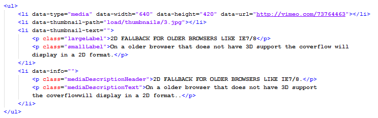

“Simple 3D Coverflow” Documentation by FWDesign
“Simple 3D Coverflow”
Thank you for purchasing our script. If you have any questions that are beyond the scope of this help file, please feel free to email via our email. Thanks so much!
Table of Contents
- IMPORTANT NOTES - read this before anything else
- Setting up the thumbnails
- How to install the coverflow with responsive / fixed width
- How to install the coverflow with fluid width
- Constructor parameters
- Adding categories
- Adding thumbnails and media
- API specifications
- Sources and Credits
A) IMPORTANT NOTES - make sure you read this! - top
Before reading forward you should understand how this coverflow works. As you will read installing the coverflow into your html page is straight forward and relative simple. The coverflow is using <ul> and <li> html elements as the base for the categories (the coverflow supports one or more categories), this way if you like you can generate the content with php or asp from a database.
Each thumbnail has associated with it an action, when a thumbnail is pressed a new webpage can be opened or a lightbox with a video, image or iframe, the paths and other data for the image and video can be easily set.
Try to keep the thumbnails count under 50, this way the performance of the coverflow will be great, if you add more it will get slower especially on mobile. The coverflow also has a separate option for the mobile case, to limit the number of the thumbnails displayed, even though the pc version contains more than this max number, because the performance may vary greatly from the pc version, especially on older mobiles phones or tablets.
The examples which we have used in the demo page can be found in the "demo" folder. There is also a "start" folder which contains the minimal settings for the coverflow. Please use these files for referece to copy and paste the html and javascript code into your page.
The server is character case sensitive so always use lower case characters!
B) Setting up the thumbnails - top
Before you start using the coverflow you need to set the "thumbnailWidth" and "thumbnailHeight" properties in the coverflow constructor, these two properties represent the default thumbnails width and height. You can also assign individual width and height for each thumbnail by adding two extra attributes after the "data-thumbnail-path". These are "data-thumbnail-width" and "data-thumbnail-height" and if they are missing then the thumbnail will have the default width and height sizes mentioned before. Also the "thumbnailBorderSize" is subtracted from these values for the final size of the image, so your final image width for example will actually be "thumbnailWidth - thumbnailBorderSize".
For example for 400 and 266 width and height values, and the border size 10, the width and height of the image will actually be 390 and 256, while the whole thumbnail is 400x266.
The 3D setup is configured such that the center thumbnail will have the actual size, and the ones from the left and right will be scaled down. This is also the same for the 2D setup.
If you find it difficult to understand this rules save your images at the same size as we did in our example.
C) How to install the coverflow with responsive / fixed width - top
Please note that in the html file which is used as reference we have used the "skin_black" skin, if you need another skin replace it by modifying the skin graphics path setting from the coverflow constructor "skinPath". All skins are located in the load folder along with the images and css files.
- This display type allows the coverflow to be embedded in your html page in a <div> element. This div element (the coverflow's parent) can be located anywhere inside the page based on the page layout.
- Before you start there is a start_responsive_or_fixed.html file in the download files in the "start" folder for the basic setup. This is a start template file which you can use to copy and paste the needed code this way you can make sure you are not making any mistake while setting up the coverflow. Please note that these files contain only a few thumbnails entries, one for each lightbox media type and two cateogries for simplicity, this way it is easier to copy paste the code. If only one category is needed then delete the second <ul> tag with the attribute data-cat. Please open these html files with a text editor like notepad or preferably notepad++.
- Make sure that you copy and paste in the same folder with your html file the java and load folder.
- The javascript and css files must be imported, in the head section of your html file add the code from the below image.
- Next step is to initialize the coverflow with javascript, in the head section add code from the below image. Please note that all parameters are described in the constructor parameters section
- You need a <div> element into which the coverflow will be added as a child. This <div> element (the coverflow's parent) can be located anywhere inside the page based on the page layout, so create a <div> and set an id for it, the id is important because it is passed in the coverflow constructor, make sure it is unique. The div width and height and background color are set in the constructor, (example in the image below)
- There are three required and important parameters in the constructor (coverflowWidth, coverflowHeight, autoscale and skinPath), the width and height represents the maximum width and height of the parent <div> and coverflow, so for example if you need the coverflow at a width of 940px and height of 538px just set that in the constructor (example in the image below).
- The autoscale is useful only if the layout is responsive or fluidwidth, this means that if you have a responsive layout and the layout width is less then the coverflow width specified in the constructor and you want to keep a correct ratio then set autoscale to yes otherwise set it to no, if autoscale is set to yes the parent <div> and coverflow width and height will change based on the layout width this way a correct ratio is kept, if you don't want the height to change then set autoscale to no and only the coverflow width will be modified.
- The "skinPath" is the path to the folder that contains all the skin graphics image files, for example "load/skin_black".
- Next step is to add the in the body element an <div> element which represents the coverflow datalist, this <div> element must have an unique id which is passed in the constructor. Inside this <div> element the coverflow categories are constructed. This is best illustrated in the below image. To add categories just copy and paste an <ul> element with an attribute data-cat (please note that in the below image the html code is minimized, to view the entire html code observe the start_responsive_or_fixed.html). Make sure you read the coverflow datalist section to understand how to add more cateogries, thumbnails and configure the coverflow datalist.
- These are all the steps needed to setup the coverflow, again all this code is located in the "start" folder in the four html files so you can copy and paste the code easily without errors. Please make sure to read the constructor parameters section to understand all the coverflow properties.
D) How to install the coverflow with fluid width - top
This display type allows the coverflow to be embedded in your html page and it will always fill the browser width. This div element (the coverflow's parent) can be located anywhere inside the page based on the page layout. Please follow the same rules as in the How to install the coverflow with responsive / fixed width. The only difference is that in the constructor the display type parameter must be set to fluidwidth like this:displayType:"fluidwidth". Please note that there is a html file named start_fluid_width.html for the basic setup.
E) Constructor parameters - top
These parameters represent the possible settings for the coverflow, they are all visible in the below image and described below:
Required settings:
- coverflowHolderDivId:"myDiv" - the div id into which the coverflow will be added (this is also necessary if the displayType is set to fluidwidth).
- coverflowDataListDivId:"coverflowData" - the id of the <div> element used as the datalist for the coverflow.
- displayType:"responsive" - the display type, this can be responsive or fluidwidth, all display types are explained and an example is provided for each one of them.
- autoScale:"yes" - this can be "yes" or "no", this is useful only if the layout is responsive or fluidwidth, this means that if you have a responsive layout and the layout width is less then the coverflow width specified in the constructor and you want to keep a correct ratio then set autoscale to yes otherwise set it to no, if autoscale is set to yes the parent <div> and coverflow width and height will change based on the layout width this way a correct ratio is kept, if you don't want the height to change then set autoscale to "no" and only the coverflow width will be modified.
- coverflowWidth:940 - This represents the maximum coverflow width.
- coverflowHeight:538 - This represents the maximum coverflow height.
- skinPath:"load/skin_black" - this is the path to the skin graphics folder of the coverflow.
Main settings:
- backgroundColor:"#DDDDDD" - the coverflow background color.
- backgroundImagePath:"load/skin_black/background.jpg" - this image is used as background image for the entire coverflow.
- backgroundRepeat:"repeat-x" - this is used for the CSS background-repeat property of all of the three above background images, it can be any of the CSS values like "repeat-x", "repeat-y", "no-repeat" etc.
- showDisplay2DAlways:"no" - this can be "yes" or "no", you can set the coverflow to always display the 2D configuration even on browsers that support 3D if you want to.
- coverflowStartPosition:"center" - this is the start position of the thumbnails of the coverflow, it can be "left", "right", "center", "random" or the index of the thumbnail starting from 1.
- coverflowTopology:"dualsided" - this is the topology geometry for the thumbnails of the coverflow. It can be "onesided", "frontonesided", "dualsided", "crosssided", "acordeon" or "flipping". Each topology can be most easily understood by looking at the presets configurations.
- coverflowXRotation:0 - this is a rotation value used for the X angle of the 3D version of the coverflow.
- coverflowYRotation:0 - this is a rotation value used for the Y angle of the 3D version of the coverflow.
- numberOfThumbnailsToDisplayLeftAndRight:"all" - this represents the maximum number of thumbnails to be displayed on the left and right of the center.
- infiniteLoop:"yes" - this can be "yes" or "no", it enables the coverflow movement to flow continuously in an infinite loop in any direction. Please note that in this case you can't display all the thumbnails in the setting above, you must set a specific number..
- rightClickContextMenu:"developer" - this changes the appearance of the context menu. If "developer" the context menu will be the developer link "made by FWD". If "disabled" the context menu will be disabled completely. If "default" the context menu will be the browser default.
- fluidWidthZIndex:1000 - this is a z-index used for the "fluid-width" version of the coverflow so that you can remove conflicts with overlapping menus etc.
Thumbnail settings:
- thumbnailWidth:420 - this is the default width of the coverflow thumbnails. In case the data-thumbnail-width and data-thumbnail-height settings are not provided for a thumbnail, it's width and height will be these default values.
- thumbnailHeight:286 - this is the default height of the coverflow thumbnails. In case the data-thumbnail-width and data-thumbnail-height settings are not provided for a thumbnail, it's width and height will be these default values.
- thumbnailXOffset3D:85 - this is an offset used for the X axis space between the central thumbnail and the side ones on the 3D version of the coverflow.
- thumbnailXSpace3D:78 - this is a value used for the X axis space between the side thumbnails on the 3D version of the coverflow.
- thumbnailZOffset3D:200 - this is an offset used for the Z axis space between the central thumbnail and the side ones on the 3D version of the coverflow.
- thumbnailZSpace3D:93 - this is a value used for the Z axis space between the side thumbnails on the 3D version of the coverflow.
- thumbnailYAngle3D:70 - this is a value used for the Y angle of the side thumbnails on the 3D version of the coverflow.
- thumbnailXOffset2D:20 - this is an offset used for the X axis space between the central thumbnail and the side ones on the 2D version of the coverflow.
- thumbnailXSpace2D:30 - this is a value used for the X axis space between the side thumbnails on the 2D version of the coverflow.
- thumbnailHoverOffset:100 - this is a value used for the hover effect for the side thumbnails on the 3D version of the coverflow.
- thumbnailBorderSize:10 - the thumbnail border size in pixels.
- thumbnailBackgroundColor:"#666666" - the background color of the thumbnails.
- thumbnailBorderColor1:"#fcfdfd" - the upper border color of the thumbnails border. If these two values are different, they create a gradient effect, if they are the same then there is a single color.
- thumbnailBorderColor2:"#e4e4e4" - the lower border color of the thumbnails border. If these two values are different, they create a gradient effect, if they are the same then there is a single color.
- transparentImages:"no" - this can be "yes" or "no", used when you want to use png images with transparent backgrounds.
- thumbnailsAlignment:"center" - this can be "center", "top" or "bottom", used to align the thumbnails vertically.
- maxNumberOfThumbnailsOnMobile:13 - this is the maximum number of thumbnails to be displayed only on the mobile devices for performance reasons.
- showThumbnailsGradient:"yes" - this can be "yes" or "no", used to show or hide the thumbnails gradient.
- thumbnailGradientDirection:"left" - this can be "left" or "top", used for the direction the thumbnails gradient.
- thumbnailGradientColor1:"rgba(0, 0, 0, 0)" - this is the first color with transparency of the thumbnails gradient.
- thumbnailGradientColor2:"rgba(0, 0, 0, 1)" - this is the second color with transparency of the thumbnails gradient.
- showText:"yes" - this can be "yes" or "no", used to show or hide the thumbnails text.
- textOffset:10 - this is the distance from the text to the base of the center thumbnail.
- showThumbnailBoxShadow::"yes" - this can be "yes" or "no", used to show an box shadow on the thumbnail if desired.
- thumbnailBoxShadowCss:"0px 2px 2px #111111" - this represents the CSS box-shadow property for the thumbnail.
- showTooltip:"yes" - this can be "yes" or "no", used to show or hide the thumbnails tooltip.
- dynamicTooltip:"yes" - this can be "yes" or "no", used to show the thumbnail tooltip dynamically following the mouse cursor or static above the thumbnail.
- showReflection:"yes" - this can be "yes" or "no", used to show or hide the thumbnails reflection.
- reflectionHeight:60 - this is the height of the thumbnails reflection.
- reflectionDistance:0 - this is the distance of the reflection to the thumbnail.
- reflectionOpacity:.2 - the opacity of the thumbnails reflection.
Controls settings:
- slideshowDelay:5000 - this is the slideshow delay in milliseconds - this means 5000 represents 5 seconds.
- autoplay:"no" - this can be "yes" or "no", it can enable the coverflow to start with the autoplay on or off.
- disableNextAndPrevButtonsOnMobile:"no" - this can be "yes" or "no", it shows or hides the next and prev buttons on the mobile devices, if you want them to be displayed only on the pc.
- controlsMaxWidth:700 - this represents the max widths of the controls and is used to scale the scrollbar at resize.
- slideshowTimerColor:"#FFFFFF" - this is the color of the slideshow timer display numbers.
- controlsPosition:"bottom" - This can be "bottom" or "top", it represents the position of the coverflow controls.
- controlsOffset:15 - This is the offset of the position of the coverflow controls.
- showPrevButton:"yes" - this can be "yes" or "no", it shows or hides the previous button of the coverflow.
- showNextButton:"yes" - this can be "yes" or "no", it shows or hides the next button of the coverflow.
- showSlideshowButton:"yes" - this can be "yes" or "no", it shows or hides the slideshow button of the coverflow.
- showScrollbar:"yes" - this can be "yes" or "no", used to show or hide the scrollbar.
- disableScrollbarOnMobile:"yes" - this can be "yes" or "no", used to disable the scrollbar only on mobile devices.
- enableMouseWheelScroll:"yes" - this can be "yes" or "no". Disables or enables the mouse wheel support for scrolling the coverflow.
- scrollbarHandlerWidth:200 - the width of the scrollbar handler.
- scrollbarTextColorNormal:"#000000" - the normal color of the scrollbar text.
- scrollbarTextColorSelected:"#FFFFFF" - the selected color of the scrollbar text.
- addKeyboardSupport:"yes" - this can be "yes" or "no", it adds keyboard navigation support for the coverflow, through the left and right arrows.
Categories settings:
- showCategoriesMenu:"yes" - this can be "yes" or "no", used to show or hide the coverflow categories menu.
- startAtCategory:1 - If there is more then one category you can specify at which one to start, please note that the count starts from 1.
- categoriesMenuMaxWidth:700 - this represents the max widths of the categories menu. In case the page width is smaller than the menu width, the menu will be scrolled.
- categoriesMenuOffset:700 - this represents the offset of the position of the categories menu.
- categoryColorNormal:"#999999" - the normal color of the category text.
- categoryColorSelected:"#FFFFFF" - the selected color of the category text.
Lightbox settings:
- addLightBoxKeyboardSupport:"yes" - this can be "yes" or "no", adds keyboard support to the lightbox.
- showLightBoxNextAndPrevButtons:"yes" - this can be "yes" or "no", hides or shows the lightbox next and prev buttons.
- showLightBoxZoomButton:"yes" - this can be "yes" or "no", hides or shows the lightbox zoom button.
- showLightBoxInfoButton:"yes" - this can be "yes" or "no", hides or shows the lightbox info button and info window.
- showlightboxSlideShowButton:"yes" - this can be "yes" or "no", hides or shows the lightbox slideshow button.
- showLightBoxInfoWindowByDefault:"no" - this can be "yes" or "no", opens the info window by default.
- slideShowAutoPlay:"yes" - this can be "yes" or "no", slideshow autoplay feature.
- lightBoxVideoAutoPlay:"no" - this can be "yes" or "no", vimeo and youtube autoplay feature.
- lightBoxVideoWidth:640 - this represents the width of the lightbox video.
- lightBoxVideoHeight:480 - this represents the height of the lightbox video.
- lightBoxIframeWidth:800 - this represents the width of the lightbox iframe.
- lightBoxIframeHeight:600 - this represents the height of the lightbox iframe.
- lightboxBackgroundColor:"#000000" -the lightbox main background color.
- lightBoxInfoWindowBackgroundColor:"#FFFFFF" -the lightbox description window background color.
- lightBoxItemBorderColor1:"#FFFFFF" - the lightbox image or video upper border color. If these two values are different, they create a gradient effect, if they are the same then there is a single color.
- lightBoxItemBorderColor2:"#FFFFFF" - the lightbox image or video lower border color. If these two values are different, they create a gradient effect, if they are the same then there is a single color.
- lightBoxItemBackgroundColor:"#FFFFFF" - the lightbox image or video background color.
- lightBoxMainBackgroundOpacity:.8 - the lightbox main background opacity, a number from 0 to 1.
- lightBoxInfoWindowBackgroundOpacity:.9 - the lightbox description window background opacity, a number from 0 to 1.
- lightBoxBorderSize:5 - the lightbox image or video border size.
- lightBoxBorderRadius:0 - the lightbox border radius in pixels.
- lightBoxSlideShowDelay:4000 - the lightbox slideshow delay in milliseconds - this means 4000 represents 4 seconds.
F) Adding categories - top
Adding categories is easy just copy and paste inside the datalist <ul> element another <ul> element with an attribute data-cat, this attribute is setting the button label. Inside the <ul> element with the attribute data-cat thumbnails with images can be added (please read Adding thumbnails and media). To remove the category just delete the <ul> element with an attribute data-cat which you don't need. Please note that if the coverflow has only one category the combobox will be disabled/not visible. This is better illustrated in the below image, please note that we minified the html code, to view it maximized open any of the html files from the "start" folder provided in the download files.
G) Adding thumbnails and media - top
This section describes how to add a thumbnail and how to configure it so that it display videos, images, iframes or open links. Make sure you have opened any of the html files from the "start" folder provided, in a text editor for reference. First you need to know that each thumbnail is associated with an image, video, iframe or link. Please note that the <li> with the attribute data-info which represents the lightbox description is optional, also the <li> with the attribute data-thumbnail-text which represents the thumbnail description is optional if the showText and showTooltip options are set to "no". To add more thumbnails just copy paste a <li> element like in the examples below in the category of your choosing.
Adding images:
To add an image add the code from the below image into the datalist <ul> just like the image below.The first <li> element represents the image path, the second <li> element represents the thumbnails path, the third <li> element represents the thumbnail description and the forth <li> element represents the lightbox description. There are two thumbnail size settings - "data-thumbnail-width" and "data-thumbnail-height" - that are optional and if they are missing the default "thumbnailWidth" and "thumbnailHeight" values are used for the size of the thumbnails. Here is an example:
Adding videos from vimeo:
To add a video from vimeo add the code from the below image into the datalist <ul> just like the image below. The first <li> element represents the video data as you can see you can set the video width and height and also the url of the video which you want to display, the second <li> element represents the thumbnails path, the third <li> element represents the thumbnail description and the forth <li> element represents the lightbox description.

Adding videos from youtube:
To add a video from youtube add the code from the below image into the datalist <ul> just like the image below. The first <li> element represents the video data as you can see you can set the video width and height and also the url of the video from youtube which you want to display, the second <li> element represents the thumbnails path, the third <li> element represents the thumbnail description and the forth <li> element represents the lightbox description.
Adding an iframe (html page):
To add a html page (iframe) add the code from the below image into the datalist <ul> just like the image below. The first <li> element represents the iframe data as you can see you can set the iframe width and height and also the url of the html page which you want to display, the second <li> element represents the thumbnails path, the third <li> element represents the thumbnail description and the forth <li> element represents the lightbox description.
Adding a link to open when a thumbnail is pressed:
To add a link to a thumbnail add the code from the below image into the datalist <ul> just like the image below. The first <li> element represents the link data as you can see you can add the url to open when the thumbnail is pressed and the url target, the second <li> element represents the thumbnails path, the third <li> element represents the thumbnail description and the forth <li> element represents the lightbox description.
H) API specifications: - top
The following lists represent all the public API functions and event listeners that you can use from the coverflow externally:
Public methods:
| Function |
Method |
Description |
isAPIReady |
isAPIReady():Boolean |
Specifies if the API functions are ready to use, possible values are true or false. |
getCurrentCategoryId |
getCurrentCategoryId():Number |
Get the current category id, this method returns a number between 0 and the number of categories - 1. |
switchCategory |
switchCategory( Number ):void |
Set the category id, it will automatically switch to that category just like in the combobox selection. Accepts a parameter that represents a number between 0 and the number of categories - 1. |
getCurrentThumbId |
getCurrentThumbId():Number |
Get the current thumb id, this method returns a number between 0 and the number of thumbs - 1. |
gotoThumb |
gotoThumb( Number ):void |
Set the thumb id, it will automatically go to that thumb. Accepts a parameter that represents a number between 0 and the number of thumbs - 1. |
isSlideshowPlaying |
isSlideshowPlaying():Boolean |
Specifies if the slideshow is playing, possible values are true or false. |
startSlideshow |
startSlideshow():void |
Starts the coverflow slideshow to play. |
stopSlideshow |
stopSlideshow():void |
Stops the coverflow playing slideshow. |
Event listeners:
| Event |
Prefix |
Description |
isAPIReady |
FWDSimple3DCoverflow.IS_API_READY |
Dispatched when the coverflow instance API is actually available to use. |
categoryChange |
FWDSimple3DCoverflow.CATEGORY_CHANGE |
Dispatched when the coverflow category has changed. It has the current category id attached to it, you can access it like an attribute "event.id". |
thumbChange |
FWDSimple3DCoverflow.THUMB_CHANGE |
Dispatched when the coverflow thumb has changed. It has the current thumb id attached to it, you can access it like an attribute "event.id". |
You can find an example using these API methods and events in the "start" folder at the "api_test.html" file.
I) Sources and Credits: - top
This component was made by Mihai from FWD (FWDesign) FUTURE WEB DESIGN, for more information and support contact us at contact@webdesign-flash.ro
Once again, thank you so much for purchasing this item. As I said at the beginning, I'd be glad to help you if you have any questions regarding this coverflow and I'll do my best to assist.
FWDesign
Go To Table of Contents